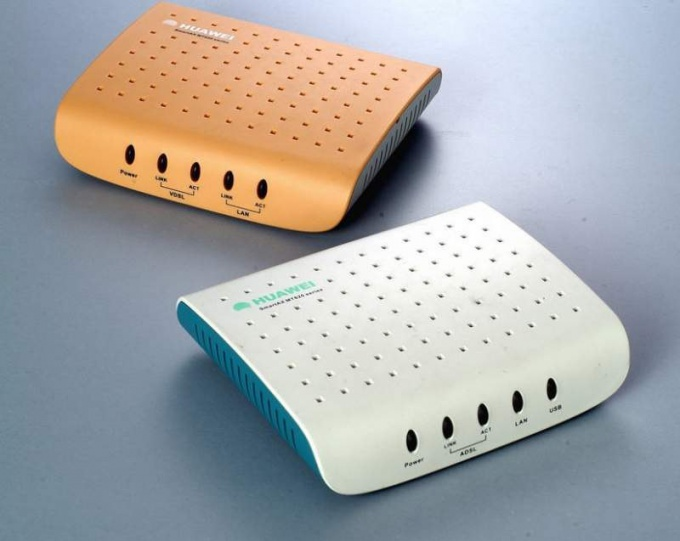
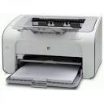
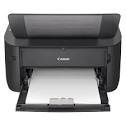
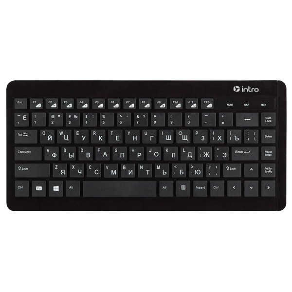
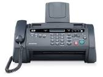
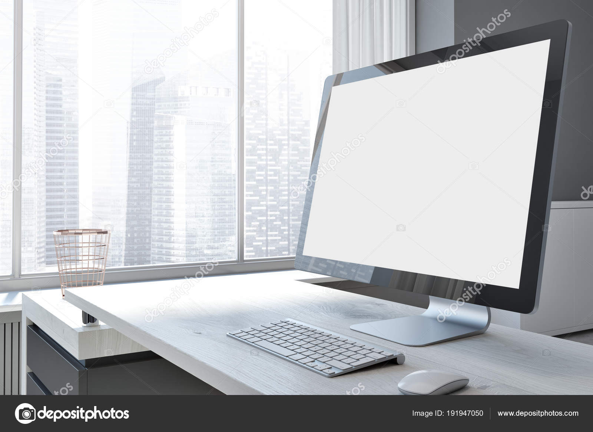
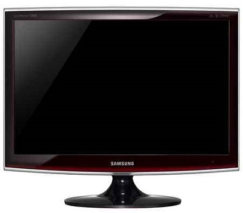
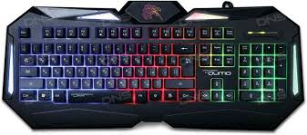
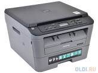
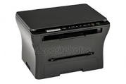

| ФОТО | ТИП | КРАТКОЕ ОПИСАНИЕ | РЕЙТИНГ | ЦЕНА |
|---|---|---|---|---|
| VFC121 | Модемы | Принтер, цветная, пьезоэлектрическая струйная печать, максимальный формат A4, скорость печати 37 стр/мин (ч/б А4), 38 стр/мин (цветн. А4), печать фотографий, подключение Wi-Fi, 802.11n, USB 2.0, размеры 537x187x289 мм, подача бумаги 120 | ***** | 45.45 BYN |
| VFC122 | Принтеры | Принтер, цветная, пьезоэлектрическая струйная печать, максимальный формат A4, скорость печати 37 стр/мин (ч/б А4), 38 стр/мин (цветн. А4), печать фотографий, подключение Wi-Fi, 802.11n, USB 2.0, размеры 537x187x289 мм, подача бумаги 120 | ***** | 55.45 BYN |
| VFC123 | Принтеры | Принтер, цветная, пьезоэлектрическая струйная печать, максимальный формат A4, скорость печати 37 стр/мин (ч/б А4), 38 стр/мин (цветн. А4), печать фотографий, подключение Wi-Fi, 802.11n, USB 2.0, размеры 537x187x289 мм, подача бумаги 120 | ***** | 65.45 BYN |
| VFC124 | Модемы | Тип связи Wi-Fi Частотный диапазон устройств Wi-Fi 2.4 / 5 ГГц Стандарт Wi-Fi 802.11n Макс. скорость беспроводного соединения 300 Мбит/с | ** | 75.45 BYN |
| VFC15 | Экраны | Принтер, цветная, пьезоэлектрическая струйная печать, максимальный формат A4, скорость печати 37 стр/мин (ч/б А4), 38 стр/мин (цветн. А4) | ***** | 85.45 BYN |
| VFC126 | Принтеры | Принтер, цветная, пьезоэлектрическая струйная печать, максимальный формат A4, скорость печати 37 стр/мин (ч/б А4), 38 стр/мин (цветн. А4) | ***** | 95.45 BYN |
| VFC127 | Модемы | записная книжка на 60 номеров (24 - набор одним касанием, 36 - набор в два касания); эффективная ширина сканирования 210 мм; автоматическая регулировка контрастности; 64 уровня полутонов | *** | 95.45 BYN |
| VFC128 | Клавиатуры | Принтер, цветная, пьезоэлектрическая струйная печать, максимальный формат A4, скорость печати 37 стр/мин (ч/б А4), 38 стр/мин (цветн. А4) | **** | 99.45 BYN |
| VFC19 | МФУ | Копир, принтер, сканер, цветная, пьезоэлектрическая струйная печать, максимальный формат A4, скорость печати 27 стр/мин (ч/б А4), 15 стр/мин (цветн. А4), печать фотографий, тип сканера планшетный, подключение USB 2.0, размеры | ***** | 55.45 BYN |
| VFC1210 | МФУ | Копир, принтер, сканер, цветная, пьезоэлектрическая струйная печать, максимальный формат A4, скорость печати 27 стр/мин (ч/б А4), 15 стр/мин (цветн. А4), печать фотографий, тип сканера планшетный, подключение USB 2.0, размеры | ***** | 44.45 BYN |
Адрес самовывоза: пр-т. Победителей 57, Мінск 220035
Время работы: 10:00 - 20:00
Телефон: 8 044 755-55-57